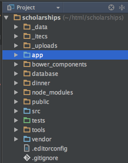
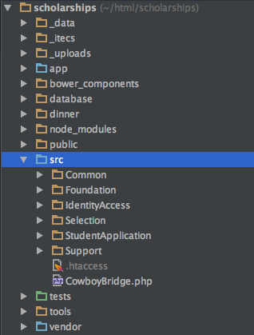

My department supports about 80 applications that support business processes of the College of
Engineering
Supporting Legacy is Hard
It's harder to read code than to write it. This is why code reuse is so hard.
- Joel Spolsky
Why Bootstrapping is important
A lot of web development work involves supporting legacy applications
It is HARD to justify refactoring
Bootstrapping gives you flexibility to support your application
Let's review some terminology... (source: wikipedia)
Legacy Software
Software developed using older technologies and practices. It can be difficult to replace because of its
wide use.
Often a pejorative term, referencing a system as "legacy" often implies that the system is out
of date or in need of replacement.
Spaghetti Code
The relationships between pieces of code are so tangled, it’s nearly impossible to add or change
something without unpredictably breaking something.
Lasagna code
Lasagna code is code that has way too many layers.
In Object Oriented programming, this means code that has many really small classes when a few slightly
larger classes would have done the trick.
Refactor
Technique for restructuring an existing body of code, altering its internal structure without
changing its external behavior.
Technical Debt
A metaphor referring to the eventual consequences of any system design, software architecture or software
development within a codebase.
Bootstrapping
In software this usually means, building onto an existing system for the purpose of
improvement with the least amount of sweat equity and development cost in the process.
Why Bootstrapping is important
A lot of web development work involves supporting legacy applications
It is HARD to justify refactoring
Bootstrapping gives you flexibility to support your application
The Project: Scholarships
The Project: Scholarships
Engineering Foundation receives money from donors to give to
students
Students apply each year giving information about themselves
Donors specify criteria/rules for students to receive money
Selection Committee selects Candidates to receive money
Scholarship Coordinator reports these Recipients to Financial Aid
Financial Aid awards the money
Bootstrapping Scholarships
How to Bootstrap
Survey Your Application
Legacy projects have business value baked in, that you must preserve.
Organize the Work to be done
Based on the bugs, new features, etc. You have to balance needs vs. wants to deliver this
product.
Survey Your Application
Talk to users of the application
Study the codebase
Examine the new feature requests
Talk to Users of the Application
Is their process consistent with the application?
What are the pain points?
Do they have concerns with the application?
Don’t rely on developer feedback
User Feedback: Scholarship Process
Process was inconsistent with the application
Language of the customer and the application was entirely different
Selection Committee used a spreadsheet of available scholarship money
Selected Candidates were added to a spreadsheet Student ID and Amount and Term of award
User Feedback: Scholarship Pain Points
High Margin of Error
Their process was exiting and re-entering the system through spreadsheets
User Feedback: Scholarship Concerns
They didn’t trust that Selection Committee was choosing the best candidates
The Scoring algorithm was not clear/effective
Multiple majors weren't allowed by our system
NOT ALL MONEY WAS BEING AWARDED
MONEY LEFT UN-GIVEN ⇒ ANGRY DONORS
Survey Your Application
Talk to users of the application
Study the codebase
Examine the new feature requests
Study the codebase
Talk to past/current developers
Verify that key functionality does what everyone thinks it does
Look for entanglements
Codebase of Scholarship
Large App model
SQL queries, only slightly dynamic
Functions weren’t single-purpose
No Bounded Contexts between Students, Selection, and Foundation
Codebase of Scholarship
Student data was a single row in table
Academic information wasn’t updated when it changed
We passed this array into a $config variable that could be accessed as `$config['app']['base_url']`
The Good Stuff
Bootstrapping: Filetree
new code in '/src' alongside the '/app' directory


Bootstrapping: Namespaces
'/src' is given a namespace
namespaces are autoloaded in composer
{
"name": "itecs/scholarships",
"description": "Scholarships application for the College of Engineering.",
...
"autoload": {
"psr-4": {
"ITECS\\Scholarships\\": [ "src/", "app/core/" ],
"Codeception\\Module\\": "src/",
"Tests\\Substitute\\": "tests/_helpers/"
}
}
}
Bootstrapping: Connecting to the Framework
'/app/bindings.php'
define containers for new code and its dependencies
'/app/controllers'
new controllers for the new functionality
'/app/services.php'
defined and configured twig, database, et al
Dependency Injection Containers
Containers
'/app/bindings.php'
<?php
//example one
use ITECS\Scholarships\Selection\Infrastructure\Services\IlluminateDatabaseGpaService;
$container['ITECS\Scholarships\Common\Services\GpaService'] = function($c) {
return new IlluminateDatabaseGpaService($c['database']);
};
//example two
use ITECS\Scholarships\Selection\Domain\ApplicantQueryService;
$container['ITECS\Scholarships\Selection\Domain\ApplicantQueryService'] = function($c) {
return new ApplicantQueryService(
$c['ITECS\Scholarships\StudentApplication\UseCases\StudentQueryService'],
$c['ITECS\Scholarships\Common\Services\ResidenciesService'],
$c['ITECS\Scholarships\Common\Services\GpaService'],
$c['ITECS\Scholarships\Common\Services\UnmetNeedService'],
$c['ITECS\Scholarships\Common\Services\CandidateQualificationService']
);
};
Controllers
class Selectionnext extends BaseController
{
public function Selectionnext()
{
parent::BaseController();
$this->scholarshipRepository = $this->container['ITECS\Scholarships\Selection\Domain\Scholarship\ScholarshipRepository'];
$this->collaborationsService = $this->container['ITECS\Scholarships\Selection\Domain\CollaborationsService'];
$this->committeeService = $this->container['ITECS\Scholarships\Selection\Domain\CommitteeService'];
$this->authService = $this->container['ITECS\Scholarships\IdentityAccess\AuthenticationService'];
$this->awardsService = $this->container['ITECS\Scholarships\Selection\Domain\Scholarship\AwardsService'];
$this->events = $this->container['ITECS\Scholarships\Support\Events\EventStore'];
}
/*
* Displays the primary scholarship dashboard. If no ID parameter is present, control is passed
* to the committeeDashboard action. If a parameter is passed, control is passed to the
* scholarshipsDashboard controller.
*/
public function scholarships($scholarshipId = null)
{
if (is_null($scholarshipId)) {
$this->committeeDashboard();
} else {
$this->scholarshipsDashboard($scholarshipId);
}
}
protected function scholarshipsDashboard($scholarshipId)
{
$committeeMember = $this->getCommitteeMember();
$scholDetails = $this->getScholarshipDashboard($scholarshipId);
$currentCommittee = $this->getCurrentlySelectedCommittee($committeeMember);
$currentScholarshipPeriod = $this->getCurrentlySelectedScholarshipPeriod();
$deptDetails = $this->getCommitteeDashboard($committeeMember);
$accessibleDepartments = $this->getNavigationJsonFor($committeeMember);
// FIXME. This navigation and auth content "envelope" needs to be handled more consistently by the presenters; ideally the controller should just drop the json package into the render call, not compose new top-level new keys
$navigation = array( 'scholarshipPeriods'=> $this->determineScholarshipPeriods(), 'currentScholarshipPeriod' => $currentScholarshipPeriod['value'], 'currentDepartment' => $currentCommittee->abbreviation );
$this->render('pages/scholarship-details.twig', array("scholarship" => $scholDetails, "deptDetails" => $deptDetails, 'navigation'=>$navigation, 'auth' => array('accessibleDepartments'=>$accessibleDepartments)));
}
private function getScholarshipDashboard($scholarshipId,$keepItLight=false)
{
$committeeMember = $this->getCommitteeMember();
$presenter = new ScholarshipDashboardPresenter(
$committeeMember,
ScholarshipId::fromString($scholarshipId),
$this->events,
$this->scholarshipRepository,
$this->container['ITECS\Scholarships\Selection\Domain\ApplicantQueryService'],
$keepItLight
);
$scholDetails = $presenter->asArrayForJson();
$scholDetails['json_string'] = json_encode($scholDetails);
return $scholDetails;
}
?>
Summary: Scholarship Wins!
Implemented multiple majors successfully
Eliminated unqualified candidates
made the scoring easier to read
reduced the manual review of candidates
Selection process was entirely inside the application
Summary: Scholarship Wins!
Restored confidence in selection process!
Fewer awards were rejected!
More Scholarship Money was awarded in the application than ever before!
By May 2015: Approximately $1,074,394 Awarded
Summary: Lessons Learned
Huge time investment (approx. 9 months to complete selection) With more work over the summer to
complete
Over time we lost team participation because we have too many other projects needing attention
Tight deadlines with un-scoped work, we created technical debt that we would have to address in
the next academic year
Summary: Lessons Learned
We learned a lot of new techniques
Bootstrapping Legacy Apps
Event Sourcing
Domain-Driven Design
Command Query Response Segregation
Project Management
A LOT!
Summary: What we Finished
Replaced the full Student Application
Replaced the Legacy Selection Process
Built Event-source distribution of scholarship money
Summary: Entering Year Two
Rollover between Academic years
The Scholarship CRUD application
Beginning of the year Fund allocations
Increase/Decrease of Funds
University is replacing it
Summary: What now?
Backed up and removed all events from the previous year
Gave them two years of selection until Academic Works could get up and running